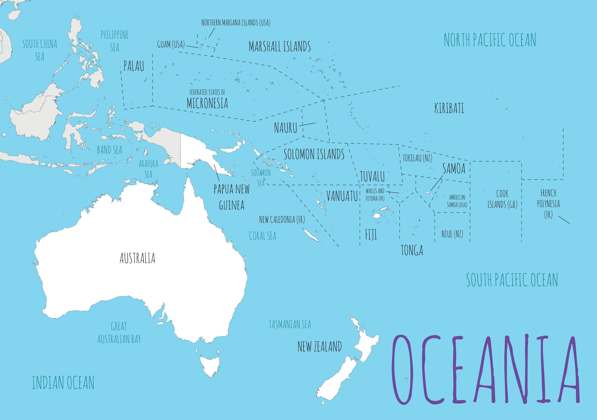

Óceánia a világ legkisebb kontinense szárazföldi területét tekintve. Alig több mint 40 millió fős lakossága pedig a világ 6. legnépesebb kontinensévé teszi az Antarktisz után. Óceánia 14 független államból áll, legnagyobb és legnépesebb országa Ausztrália.

Új-Zéland juhállománya meghaladja az emberekét.
Új-Zélandon a juhok száma messze meghaladja az emberi populációét, minden emberre körülbelül hat juh jut.
Ez a bőséges juhállomány kulcsszerepet játszik Új-Zéland mezőgazdaságában és gazdaságában, különösen a gyapjútermelésben.
Ausztrália egyszerre ország és kontinens.
Ausztrália mint a legkisebb kontinens és mint nagy ország egyedülálló megkülönböztetése számos természeti csodát kínál.
A táj a sivatagoktól a trópusi esőerdőkig terjed, és olyan különleges vadon élő állatoknak ad otthont, mint a kenguruk és a koalák.
A közelmúltig a kannibalizmus elterjedt volt Pápua Új-Guineában
Pápua Új-Guinea távoli vidéke számos sötét titkot rejt. A világ legfrissebb kannibalizmusának néhány esetéről itt számoltak be. Még 2012-ben is felbukkantak itt kannibál támadásokról szóló jelentések, amelyek szerint a kannibálok agyakat és más belső szerveket fogyasztottak el. 2016-ban egy brit turista és barátnője csak hajszál híján menekült meg attól, hogy egy helyi törzs tagjai elkapják őket, miközben Pápua Új-Guineában túráztak. Attól tartottak, hogy támadóik kannibálok lehetnek.